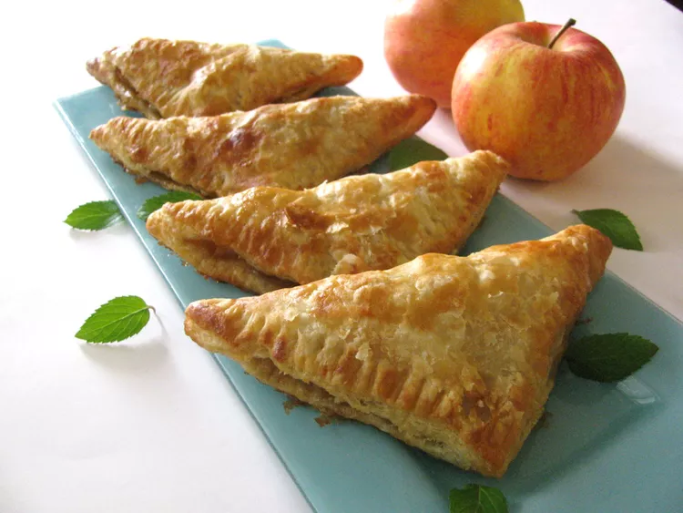

Apple Turnover

Description
This apple turnover recipe includes a delicious homemade filling that's baked inside flaky puff pastry triangles. I like to drizzle a sweet glaze on top when they are cooled or serve warm with vanilla ice cream.
Ingredients
- 2 tablespoons lemon juice
- 4 cups water
- 4 Granny Smith apples - peeled, cored and sliced
- 2 tablespoons butter
- 1 cup brown sugar
- 1 teaspoon ground cinnamon
- 1 tablespoon cornstarch
- 1 tablespoon water
- 1 (17.25 ounce) package frozen puff pastry sheets, thawed
- 1 cup confectioners' sugar
- 1 tablespoon milk
- 1 teaspoon vanilla extract
Steps
- Gather the ingredients.
- Combine lemon and 4 cups water in a large bowl. Place the sliced apples in the water to keep them from browning.
- Melt butter in a large skillet over medium heat. Drain water from apples, and place them into the hot skillet. Cook and stir for about 2 minutes. Add brown sugar, and cinnamon, and cook, stirring, for 2 more minutes.
- Stir together cornstarch and 1 tablespoon water. Pour into the skillet and mix well. Cook for another minute, or until sauce has thickened. Remove from heat to cool slightly.
- Stir together cornstarch and 1 tablespoon water. Pour into the skillet and mix well. Cook for another minute, or until sauce has thickened. Remove from heat to cool slightly.
- Then cut each larger square into 4 smaller squares. Spoon apples onto the center of each square. Fold over from corner to corner into a triangle shape, and press edges together to seal.
- Place turnovers on a baking sheet, leaving about 1 inch between them. Bake for 25 minutes in the preheated oven, until turnovers are puffed and lightly browned. Cool completely before glazing.
- To make the glaze: Mix confectioners' sugar, milk, and vanilla together in a small bowl. Adjust the thickness by adding more sugar or milk if necessary. Drizzle glaze over the cooled turnovers.
- Enjoy!
credits
home page